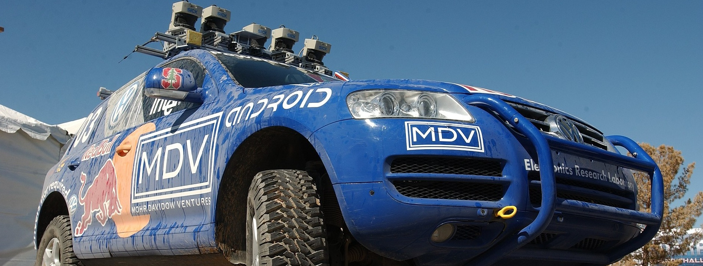

Humans are excellent navigators due to their remarkable ability to build cognitive maps [†]McNamara, T. P., Hardy, J. K. & Hirtle, S. C. Subjective hierarchies in spatial memory. Journal of Experimental Psychology: Learning, Memory, and Cognition 15, 211 (1989) which form the basis of spatial memory [†]Chun, M. M. & Jiang, Y. Contextual cueing: Implicit learning and memory of visual context guides spatial attention. Cognitive psychology 36, 28–71 (1998), [†]Huang, C. et al. Visual language maps for robot navigation in 2023 IEEE International Conference on Robotics and Automation (ICRA) (2023), 10608–10615. However, when it comes to AMRAutonomous Mobile RoboticsAutonomous Mobile Robotics, we unfortunately need to be more hands on.
All of the localisation strategies we have discussed previously require active human effort to install the robot into a space. Artificial environmental modifications may be necessary to reduce ambiguity [†]Meyer-Delius, D. et al. Using artificial landmarks to reduce the ambiguity in the environment of a mobile robot in 2011 IEEE International Conference on Robotics and Automation (2011), 5173–5178. Even if this is not so, a map of the environment must be created for the robot.
But a robot which localizes successfully has the right sensors for detecting the environment, and so the robot ought to build its own map.
This ambition goes to the heart of AMRAutonomous Mobile RoboticsAutonomous Mobile Robotics. In prose, we can express our eventual goal as follows:
While we have system which allows certain level of intelligence to robots, most applications require a connected network or a central node to achieve any autonomous action [†]Hazik, J. et al. Fleet management system for an industry environment. Journal of Robotics and Control (JRC) 3, 779–789 (2022), [†]Xidias, E., Zacharia, P. & Nearchou, A. Intelligent fleet management of autonomous vehicles for city logistics. Applied Intelligence 52, 18030–18048 (2022). Accomplishing this goal purely using internal components in a robust is probably years away, but an important sub-goal is the invention of techniques for autonomous creation and modification of an environment map. Of course a AMRAutonomous Mobile RoboticsAutonomous Mobile Robotics’s sensors have only limited range, and so it must physically explore its environment to build such a map. So, the robot must not only create a map but it must do so while moving and localizing to explore the environment. This is often called the SLAMSimultaneous Localisation and MappingSimultaneous Localisation and Mapping problem, (...) Computational problem of constructing or updating a map of an unknown environment while simultaneously keeping track of an agent’s location within it. While this initially appears to be a chicken or the egg problem, there are several algorithms known to solve it in, at least approximately and in reasonable time for certain environments. Popular solutions include the particle filter, extended Kalman filter, covariance intersection, and GraphSLAM. SLAM algorithms are based on concepts in computational geometry and computer vision, and are used in robot navigation, robotic mapping and odometry for virtual reality or augmented reality. arguably the most difficult problem specific to AMRAutonomous Mobile RoboticsAutonomous Mobile Robotics systems.

The reason why SLAMSimultaneous Localisation and MappingSimultaneous Localisation and Mapping is difficult is born precisely from the interaction between the robot’s position updates as it localises and its mapping actions. If a AMRAutonomous Mobile RoboticsAutonomous Mobile Robotics updates its position based on an observation of an imprecisely known feature, the resulting position estimate becomes correlated with the feature location estimate. Similarly, the map becomes correlated with the position estimate if an observation taken from an imprecisely known position is used to update or add a feature to the map.
For localisation the robot needs to know where the features are whereas for map building the robot needs to know where it is on the map.
The only path to a complete and optimal solution to this joint problem is to consider all the correlations between between position estimation and feature location estimation. Such cross-correlated maps are called stochastic maps [†]Hashimoto, S. et al. Humanoid robots in waseda university–hadaly-2 and wabian. Autonomous Robots 12, 25–38 (2002). Unfortunately, implementing such an optimal solution is computationally prohibitive.
Fig. ?? presents a diagram incorporating map building and maintenance into the standard localisation loop depicted by Figure (5.29) during discussion of Kalman filter localisation [9]. The added arcs represent the additional flow of information that occurs when there is an imperfect match between observations and measurement predictions.
Unexpected observations will affect the creation of new features in the map whereas unobserved measurement predictions will affect the removal of features from the map. As discussed earlier, each specific prediction or observation has an unknown exact value and so it is represented by a distribution. The uncertainties of all of these quantities must be considered throughout this process.
The new type of map we are creating not only has features in it as did previous maps, but it also has varying degrees of probability that each feature is indeed part of the environment.
We represent this new map
with a set of probabilistic
feature locations , each with
the covariance matrix and an
associated
The purpose of is to quantify the belief in the existence of the feature in the environment (see Fig. (5.41)):
|
| (3.25) |
In contrast to the map used for Kalman filter localisation previously, the map
is NOT assumed
to be
-
matched prediction and observations,
-
unexpected observations, and
-
unobserved predictions
Localisation, or the position update of the robot, proceeds as before. However, the map is also updated now, using all three outcomes and complete propagation of all the correllated uncertainties.
The interesting concept in this modelling is the
As an example, in [†]Carroll, R. J. & Ruppert, D. Transformation and weighting in regression (Chapman and Hall/CRC, 2017) the following function is proposed for calculating credibility:
| (3.26) |
where and
define the
This forces us to use a stochastic map, in which all cross-correlations must be updated in each cycle.
The stochastic map consists of a stacked system state vector:
|
| (3.27) |
and a system state covariance matrix:
|
| (3.28) |
where the index r stands for the robot and the index i = 1 to n for the features in the map.
In contrast to localization based on an a priori accurate map, in the case of a stochastic map the cross-correlations must be maintained and updated as the robot is performing automatic map-building. During each localization cycle, the cross-correlations robot-to-feature and feature-to-robot are also updated. In short, this optimal approach requires every value in the map to depend on every other value, and therein lies the reason that such a complete solution to the automatic mapping problem is beyond the reach of even today’s computational resources.
The AMRAutonomous Mobile RoboticsAutonomous Mobile Robotics research community has spent significant research effort on the problem of automatic mapping, and has demonstrating working systems in many environments without having solved the complete stochastic map problem described earlier.
This field of AMRAutonomous Mobile RoboticsAutonomous Mobile Robotics research is extremely large, and this Lecture Book will NOT present a comprehensive survey of the field
Instead, let’s look at the two (
Cyclic Environments
Possibly the single hardest challenge for automatic mapping to be conquered is to correctly map cyclic environments. The problem is simple:
This problem is hard because of the fundamental behavior of automatic mapping systems:
The maps they create are not perfect.
And, given any local imperfection, accumulating such imperfections over time can lead to arbitrarily large global errors between a map, at the macro level, and the real world, as shown in Fig. 3.19.

Such global error is usually irrelevant for AMRAutonomous Mobile RoboticsAutonomous Mobile
Robotics localisation and navigation. After all, a warped map will still serve the robot perfectly
well
-
First, as with many recent systems, these mobile robots tend to accumulate recent perceptual history to
create small-scale local sub-maps [†]Nourbakhsh, I. R. et al. Mobile robot obstacle avoidance via depth from focus. Robotics and Autonomous Systems 22, 151–158 (1997). In this approach, each sub-map is treated as a singular sensor during the robot’s position update. The advantage of this approach is two-fold.-
As odometry is relatively accurate over small distances, the relative registration of features and raw sensor strikes in a local sub-map will be quite accurate.
-
The robot will have created a virtual sensor system with a significantly larger horizon than its actual sensor system’s range. In a sense, this strategy at the very least defers the problem of very large cyclic environments by increasing the map scale that can be handled well by the robot.
-
-
The second recent technique for dealing with cycle environments is in fact a
return to the topological representation . Some recent automatic mapping systems will attempt to identify cycles by associating a topology with the set of metric sub-maps, explicitly identifying the loops first at the topological level.
One could certainly imagine other augmentations based on known topological methods.
For example, the globally unique localisation methods described previously could be used to identify topological correctness.
Dynamic Environments
A second challenge extends NOT just to existing autonomous mapping solutions but even to the basic execution of the stochastic map approach.
All previously mentioned strategies tend to assume the environment is either
However, for many practical applications, this assumption is lacking at best. In the case of wide-open spaces that are popular gathering places for humans, there is rapid change in the freespace and a vast majority of sensor strikes represent detection of the transient humans rather than fixed surfaces such as the perimeter wall.
Another class of dynamic environments are spaces such as factory floors and warehouses, where the objects being stored redefine the topology of the pathways on a day-to-day basis as shipments are moved in and out.
In all such dynamic environments, an automatic mapping system should capture the salient (...) In this context, salient means anything which is sticking out. objects detected by its sensors and, furthermore, the robot should have the flexibility to modify its map as the position of these salient objects changes.
The subject of
This is most effective, of course, if the mapping system is real-time and incremental.
If map construction requires off-line global optimisation, then the desire to make small-grained, incremental adjustments to the map is more difficult to satisfy.
Earlier we stated that a mapping system should capture only the salient objects detected by its sensors. One common argument for handling the detection of, for instance, humans in the environment is that mechanisms such as serve to be mapped in the first place.
The general solution to the problem of detecting salient features, however, requires a solution to the perception problem in general. When a robot’s sensor system can reliably detect the difference between a wall and a human, using for example a vision system, then the problem of mapping in dynamic environments will become significantly more straightforward.
We have discussed just two important considerations for automatic mapping. There is still a great deal of research activity focusing on the general map building and localisation problem. This field is certain to produce significant new results in the next several years, and as the perceptual power of robots improves we expect the payoff to be greatest here.
ttt
A prize competition for American autonomous vehicles, funded by the Defense Advanced Research Projects Agency (DARPA). The goal of the challenge is too further DARPA’s mission to sponsor revolutionary, high-payoff research that bridges the gap between fundamental discoveries and military use. The initial DARPA Grand Challenge in 2004 was created to spur the development of technologies needed to create the first fully autonomous ground vehicles capable of completing a substantial off-road course within a limited time. The third event, the DARPA Urban Challenge in 2007, extended the initial Challenge to autonomous operation in a mock urban environment. The 2012 DARPA Robotics Challenge, focused on autonomous emergency-maintenance robots, and new Challenges are still being conceived. The DARPA Subterranean Challenge was tasked with building robotic teams to autonomously map, navigate, and search subterranean environments. Such teams could be useful in exploring hazardous areas and in search and rescue.
References
- 1.
-
Bulliet, R. W. The wheel: inventions and reinventions (Columbia University Press, 2016).
- 2.
-
Siegwart, R., Nourbakhsh, I. R. & Scaramuzza, D. Introduction to autonomous mobile robots (MIT press, 2011).
- 3.
-
LaBarbera, M. Why the wheels won’t go. The American Naturalist 121, 395–408 (1983).
- 4.
-
Vincent, J. F., Bogatyreva, O. A., Bogatyrev, N. R., Bowyer, A. & Pahl, A.-K. Biomimetics: its practice and theory. Journal of the Royal Society Interface 3, 471–482 (2006).
- 5.
-
Druelle, F., Abourachid, A., Vasilopoulou-Kampitsi, M. & Aerts, P. Convergence of bipedal locomotion: why walk or run on only two legs in Convergent Evolution: Animal Form and Function 431–476 (Springer, 2023).
- 6.
-
Lyons, D. M. & Pamnany, K. Rotational legged locomotion in ICAR’05. Proceedings., 12th International Conference on Advanced Robotics, 2005. (2005), 223–228.
- 7.
-
Schweitzer, G. ROBOTRAC-a Mobile Manipulator Platform for Rough Terrain in Proc. of Int. Symp. on Advanced Robot Technology (1991), 411–416.
- 8.
-
Thor, M. et al. A dung beetle-inspired robotic model and its distributed sensor-driven control for walking and ball rolling. Artificial Life and Robotics 23, 435–443 (2018).
- 9.
-
R. Jones, Z. P. S. All Praise The Humble Dung Beetle 2018.
- 10.
-
Photography, S. Common ostrich (Struthio camelus australis) male running (composite image), Damaraland, Namibia 2018.
- 11.
-
Porges. Zebra in Wellington Zoo 2025.
- 12.
-
Brittanica, E. Ant 2025.
- 13.
-
Song, Z., Hou, B., Ji, Z. & Jiang, G. The Impact of Exercise Play on the Biomechanical Characteristics of Single-Leg Jumping in 5-to 6-Year-Old Preschool Children. Sensors 25, 422 (2025).
- 14.
-
Böttcher, S. Principles of robot locomotion in Proceedings of human robot interaction seminar (2006).
- 15.
-
Krzywinski, A., Niedbalska, A. & Twardowski, L. Growth and development of hand reared fallow deer fawns. Acta theriologica 29, 349–356 (1984).
- 16.
-
Brackenbury, J. Caterpillar kinematics. Nature 390, 453–453 (1997).
- 17.
-
Winter, D. A. Biomechanics and motor control of human gait: normal, elderly and pathological (1991).
- 18.
-
Lacquaniti, F., Ivanenko, Y. P. & Zago, M. Patterned control of human locomotion. The Journal of physiology 590, 2189–2199 (2012).
- 19.
-
Pons, J. L. Wearable robots: biomechatronic exoskeletons (John Wiley & Sons, 2008).
- 20.
-
Zyhowski, W. P., Zill, S. N. & Szczecinski, N. S. Adaptive load feedback robustly signals force dynamics in robotic model of Carausius morosus stepping. Frontiers in Neurorobotics 17, 1125171 (2023).
- 21.
-
Lee, H. & Hogan, N. Investigation of human ankle mechanical impedance during locomotion using a wearable ankle robot in 2013 IEEE International Conference on Robotics and Automation (2013), 2651–2656.
- 22.
-
Alexander, R. M. Optimization and gaits in the locomotion of vertebrates. Physiological reviews 69, 1199–1227 (1989).
- 23.
-
MIT. The Raibert Hopper 1984.
- 24.
-
Murthy, S. S. & Raibert, M. H. 3D balance in legged locomotion: modeling and simulation for the one-legged case. ACM SIGGRAPH Computer Graphics 18, 27–27 (1984).
- 25.
-
Raibert, M. H., Brown Jr, H. B. & Chepponis, M. Experiments in balance with a 3D one-legged hopping machine. The International Journal of Robotics Research 3, 75–92 (1984).
- 26.
-
Citizendium. Asimo 2005.
- 27.
-
Brown, B. & Zeglin, G. The bow leg hopping robot in Proceedings. 1998 IEEE International Conference on Robotics and Automation (Cat. No. 98CH36146) 1 (1998), 781–786.
- 28.
-
Ringrose, R. Self-stabilizing running in Proceedings of International Conference on Robotics and Automation 1 (1997), 487–493.
- 29.
-
Flamingo. Spring Flamingo 2000.
- 30.
-
Erland, I. B. Rad fuer ein laufstabiles, selbstfahrendes fahrzeug. German Patent No. DE2354404A1 (1974).
-
Dowling, K. et al. NAVLAB An Autonomous Navigation Testbed in Vision and Navigation: The Carnegie Mellon Navlab 259–282 (Springer, 1990).
- 32.
-
ackerman. Ackerman Steering Mechanism 2025.
- 33.
-
Farnell. Rotary Encoder, Module, Optical, Incremental, 500 PPR, 0 Detents, Vertical, Without Push Switch 2025.
- 34.
-
Flyrobo. GY-26 Digital Electronic Compass Sensor Module 2025.
- 35.
-
FindLight. Optical Gyroscopes: Measuring Rotational Changes With Sagnac Effect 2025.
- 36.
-
Speakes, L. M. Statement by Deputy Press Secretary Speakes on the Soviet Attack on a Korean Civilian Airliner. Ronald Reagan Presidential Library, September 16 (1983).
- 37.
-
PiHut. HC-SR04 Ultrasonic Range Sensor on the Raspberry Pi 2025.
- 38.
-
Reinhold. Structured light sources on display at the 2014 Machine Vision Show in Boston. 2014.
- 39.
-
Andrzej. CCD image sensor SONY ICX493AQA 10,14 (Gross 10,75) M pixels APS-C 1.8" 28.328mm (23.4 x 15.6 mm) from module IS-026 from digital camera SONY DSLR-A200 or DSLR-A300 sensor side 2014.
- 40.
-
TeledyneCCD. How a Charge Coupled Device (CCD) Image Sensor Works 2020.
- 41.
-
Hirakawa, K. & Parks, T. Chromatic adaptation and white-balance problem in IEEE International Conference on Image Processing 2005 3 (2005), III–984.
- 42.
-
Fstoppers. Is There a Difference Between Color Temperature and White Balance? 2022.
- 43.
-
Ilie, A. & Welch, G. Ensuring color consistency across multiple cameras in Tenth IEEE International Conference on Computer Vision (ICCV’05) Volume 1 2 (2005), 1268–1275.
- 44.
-
Teledyne. Saturation and Blooming 2025.
- 45.
-
Zhang, Z. et al. Analysis and simulation to excessive saturation effect of CCD in 2nd International Symposium on Laser Interaction with Matter (LIMIS 2012) 8796 (2013), 96–102.
- 46.
-
Baumer. Operating principle and features of CMOS sensors 2025.
- 47.
-
Econ Systems. CMOS camera module 2025.
- 48.
-
Holst, T. & Lomheim, G. CMOS/CCD Sensors (JCD publishing, 2007).
- 49.
-
Mdf. A photon noise simulation 2010.
- 50.
-
Mark-j. Open Camera Blog 2018.
- 51.
-
Nourbakhsh, I. R., Andre, D., Tomasi, C. & Genesereth, M. R. Mobile robot obstacle avoidance via depth from focus. Robotics and Autonomous Systems 22, 151–158 (1997).
- 52.
-
Deselaers, T., Keysers, D. & Ney, H. Features for image retrieval: an experimental comparison. Information retrieval 11, 77–107 (2008).
- 53.
-
Boros, E. Targeting a Practical Approach for Robot Vision with Ensembles of Visual Features in 2012 Imperial College Computing Student Workshop (2012), 22–28.
- 54.
-
UoW. How Mars rovers use artificial intelligence 2023.
- 55.
-
Bailey, T. Mobile robot localisation and mapping in extensive outdoor environments PhD thesis (Citeseer, 2002).
- 56.
-
Campbell, S. et al. Where am I? Localization techniques for mobile robots a review in 2020 6th International Conference on Mechatronics and Robotics Engineering (ICMRE) (2020), 43–47.
- 57.
-
Hodge, V. J. Sensors and data in mobile robotics for localisation. Encyclopedia of Data Science and Machine Learning, 2223–2238 (2023).
- 58.
-
Jaradat, O., Sljivo, I., Habli, I. & Hawkins, R. Challenges of safety assurance for industry 4.0 in 2017 13th European Dependable Computing Conference (EDCC) (2017), 103–106.
- 59.
-
Filliat, D. & Meyer, J.-A. Map-based navigation in mobile robots:: I. a review of localization strategies. Cognitive systems research 4, 243–282 (2003).
- 60.
-
Leonard, J. J. & Durrant-Whyte, H. F. Directed sonar sensing for mobile robot navigation (Springer Science & Business Media, 2012).
- 61.
-
Wing, M. G., Eklund, A. & Kellogg, L. D. Consumer-grade global positioning system (GPS) accuracy and reliability. Journal of forestry 103, 169–173 (2005).
- 62.
-
Bellotto, N. & Hu, H. People tracking and identification with a mobile robot in 2007 International Conference on Mechatronics and Automation (2007), 3565–3570.
- 63.
-
Sridharan, M. & Stone, P. Color learning and illumination invariance on mobile robots: A survey. Robotics and Autonomous Systems 57, 629–644 (2009).
- 64.
-
Galar, D. & Kumar, U. Chapter 1 - Sensors and Data Acquisition in eMaintenance (eds Galar, D. & Kumar, U.) 1–72 (Academic Press, 2017).
- 65.
-
Williams, D. R. Aliasing in human foveal vision. Vision research 25, 195–205 (1985).
- 66.
-
maksim. An example of a poorly sampled brick pattern 2006.
- 67.
-
Blumrosen, G., Fishman, B. & Yovel, Y. Noncontact wideband sonar for human activity detection and classification. IEEE Sensors Journal 14, 4043–4054 (2014).
- 68.
-
Sabatini, A. M. & Colla, V. A method for sonar based recognition of walking people. Robotics and Autonomous Systems 25, 117–126 (1998).
- 69.
-
Batavia, P. H. & Nourbakhsh, I. Path planning for the Cye personal robot in Proceedings. 2000 IEEE/RSJ International Conference on Intelligent Robots and Systems (IROS 2000)(Cat. No. 00CH37113) 1 (2000), 15–20.
- 70.
-
xkcd. xkcd-Spirit 2025.
- 71.
-
Reuter, J. Scan-and featurebased multiple hypothesis tracking for mobile robot localization: a data fusion approach in IEEE SMC’99 Conference Proceedings. 1999 IEEE International Conference on Systems, Man, and Cybernetics (Cat. No. 99CH37028) 4 (1999), 714–719.
- 72.
-
Fankhauser, P., Bloesch, M. & Hutter, M. Probabilistic terrain mapping for mobile robots with uncertain localization. IEEE Robotics and Automation Letters 3, 3019–3026 (2018).
- 73.
-
Agency., Y. N. Museum guide robot 2018.
- 74.
-
Brock, O. & Khatib, O. High-speed navigation using the global dynamic window approach in Proceedings 1999 ieee international conference on robotics and automation (Cat. No. 99CH36288C) 1 (1999), 341–346.
- 75.
-
Borenstein, J & Koren, Y. Fast obstacle avoidance for mobile robots. IEEE Trans Rob Autom. v7, 278–287.
- 76.
-
Brooks, R. A robust layered control system for a mobile robot. IEEE journal on robotics and automation 2, 14–23 (1986).
- 77.
-
Nourbakhsh, I., Powers, R. & Birchfield, S. DERVISH an office-navigating robot. AI magazine 16, 53–53 (1995).
- 78.
-
Wang, F. et al. Object-based reliable visual navigation for mobile robot. Sensors 22, 2387 (2022).
- 79.
-
AaaravG. How to Make Line Follower Robot Using Arduino 2018.
- 80.
-
McNamara, T. P., Hardy, J. K. & Hirtle, S. C. Subjective hierarchies in spatial memory. Journal of Experimental Psychology: Learning, Memory, and Cognition 15, 211 (1989).
- 81.
-
Chun, M. M. & Jiang, Y. Contextual cueing: Implicit learning and memory of visual context guides spatial attention. Cognitive psychology 36, 28–71 (1998).
- 82.
-
Huang, C., Mees, O., Zeng, A. & Burgard, W. Visual language maps for robot navigation in 2023 IEEE International Conference on Robotics and Automation (ICRA) (2023), 10608–10615.
- 83.
-
Meyer-Delius, D., Beinhofer, M., Kleiner, A. & Burgard, W. Using artificial landmarks to reduce the ambiguity in the environment of a mobile robot in 2011 IEEE International Conference on Robotics and Automation (2011), 5173–5178.
- 84.
-
Hazik, J., Dekan, M., Beno, P. & Duchon, F. Fleet management system for an industry environment. Journal of Robotics and Control (JRC) 3, 779–789 (2022).
- 85.
-
Xidias, E., Zacharia, P. & Nearchou, A. Intelligent fleet management of autonomous vehicles for city logistics. Applied Intelligence 52, 18030–18048 (2022).
- 86.
-
Kivaan. An official DARPA photograph of Stanley at the 2005 DARPA Grand Challenge. 2007.
- 87.
-
Hashimoto, S. et al. Humanoid robots in waseda university–hadaly-2 and wabian. Autonomous Robots 12, 25–38 (2002).
- 88.
-
Carroll, R. J. & Ruppert, D. Transformation and weighting in regression (Chapman and Hall/CRC, 2017).
- 89.
-
Bruce, J., Balch, T. & Veloso, M. Fast and inexpensive color image segmentation for interactive robots in Proceedings. 2000 IEEE/RSJ International Conference on Intelligent Robots and Systems (IROS 2000)(Cat. No. 00CH37113) 3 (2000), 2061–2066.
- 90.
-
Manske. Hughes Letter-Printing Telegraph Set built by Siemens and Halske in Saint Petersburg, Russia, ca.1900 2009.
- 91.
-
Koren, O. A study of the Linux kernel evolution. ACM SIGOPS Operating Systems Review 40, 110–112 (2006).
- 92.
-
Bach, M. J. The Design of the UNIX. RTM. Operating system Prentice Hall, 312–329 (1986).
- 93.
-
Johnson, S. C. & Ritchie, D. M. UNIX time-sharing system: Portability of C programs and the UNIX system. The Bell System Technical Journal 57, 2021–2048 (1978).
- 94.
-
Debian. python3-colcon-ros 2025.
- 95.
-
Robotics., O. ROS 2 Iron Documentation 2025.
2]Hello everybody out there using MINIX. I’m doing a (free) operating system (just a hobby, won’t be big and professional like gnu) for 386(486) AT clones. This has been brewing since April, and is starting to get ready. I’d like any feedback on things people like/dislike in minix, as my OS resembles it somewhat (same physical layout of the file-system (due to practical reasons) among other things). I’ve currently ported bash (1.08) and GCC (1.40), and things seem to work. This implies that I’ll get something practical within a few months, and I’d like to know what features most people would want. Any suggestions are welcome, but I won’t promise I’ll implement them :-) - Linus PS. Yes - it’s free of any MINIX code, and it has a multi-threaded fs. It is NOT portable (uses 386 task switching etc.), and it probably never will support anything other than AT-harddisks, as that’s all I have :-(